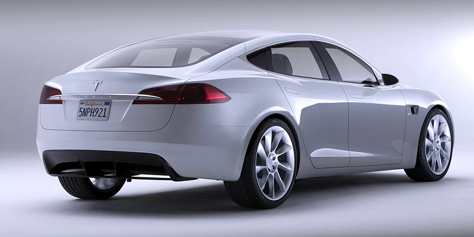
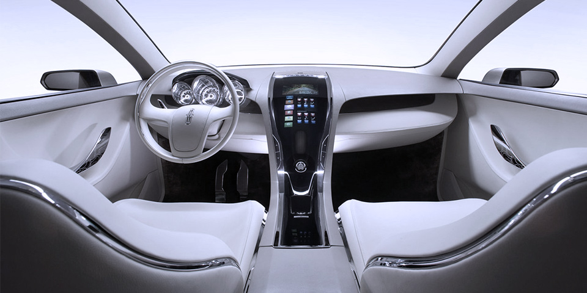

Tesla Model S
The Tesla Model S is a full-sized electric five-door, luxury liftback, produced by Tesla Motors. Since its introduction in June 2012 it has achieved rapidly growing sales, particularly in Norway and California.
Test Drive
5+2
Available seats
3.2sec
0—60 max acceleration
275mi
Range at 65 mph
Carbon Fiber Spoiler
Beginning with vehicles manufactured in late September 2014, all new Model S's come equipped with a camera mounted at the top of the windshield, forward looking radar in the lower grill, and ultrasonic sonar sensors in the front and rear bumpers that provide a 360-degree buffer zone around the car.


Premium Interior
The instrument panel is a 12.3 in (31 cm) LCD display that indicates speed, power usage, charge level, estimated range and active gear. The gearbox can be set to Drive, Neutral, Reverse and Park.